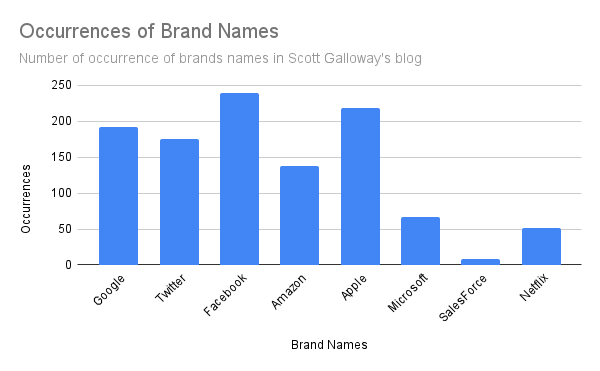
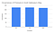
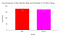
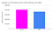

Metrics of words of ProfGalloway

According to y google search activities, the first time I got connected to the work of Scott Galloway alias prof G was in December when I was looking for information about his book the Algebra of success a few weeks or months after I have started listening to Pivot, this podcast that he and Kara Swisher present. At that time I also thought about reading his book as well as books of Sarah Swisher Aal.com and There must be A Pony Here Somewhere. I should confess that I have read from Scott Galloway only a few chapters of his book the Four, hidden DAN of Amazon, Apple, Facebook, and Google. To say that I could not state that I am an expert about this … professor but I do think that he is doing great works by highlighting important ideas and theories about how he sees the world and about tech businesses. But this article isn't about explaining you core galloway’s theories and ideas but about trying to count the number of times he use a set of defined words in order to see if with these metrics you and I could know what topics matter to this insightful professional with the expectations of getting valuable insight that we can apply to our own personal and professional work.
Like what Scott Galloway is doing with The Chart of the week which is a tribune where he shares on a weekly basis interesting things to notice using charts, we will discover together with charts what are the most important words of the writings of Scott Galloway published in the blog of his website
Let’s start by first discovering the number of occurrences or names of tech companies from the article of profG but bear in mind that the numbers that are plotted come from a proxy and is not representing the exact number of occurrences but the differences between the numbers is still meaningful. Here is the chart that shows the tech companies that are most cited by Scott Galloway.

since we have discovered the tech companies that we think matter most for ProfG, let’s see about some especially taken words like how we have done when exposing the metrics of words of Seth Godin. These chosen words are plotted here with their according number of occurrences again using this proxy as an estimator.
I hope that this chart helped you see how much education and university as well as investing matter for Scott Galloway and the place that the word world takes in his writing which is a very good place that tells that he cares about it. Who cares about the world certainly care also about us then like how have highlighted my use of pronouns for illustrating my inclination to writing more about women in my article about my medium metrics, I thought that I could also share with you an estimation of the number of occurrences of certain pronouns in the articles of Prof Scott Galloway.


This is an equilibrium that may show how stable Prof G's thinking is according to coverage of genders, meaning that his blog writing isn't inclined toward one specific gender like mine is actually. Let me recall the chart about my usage of pronouns in my published articles. This chart is here

You clearly see that I am a bit more inclined to write about women than ProfG but this article is not about comparing myself to Prof Scott Galloway and Mark Schaefer is right when he replies to me with this tweet below
and I think this advice hold for you who are reading this article which is not about comparing yourself to Scott Galloway but being the first and the greatest of you like Shaefer said.
Thank you, thank Scott Galloway, and thank you to Mark Shaefer. I hope these words and metrics will help someone.
PS: I think that you should discover the great work of Section4 a new learning experience through sprints managed by Professor Scott Galloway.
Proof of activities